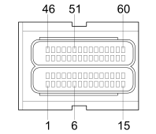

M010B ENGINE MANAGEMENT ECU (ENGINE)
- Path
- Electrical equipment > 3 CONNECTORS > M INTERMITTENT AND TIMED ELECTRONIC DEVICES,.. > M010 ENGINE MANAGEMENT ECU > M010B ENGINE MANAGEMENT ECU (ENGINE)
- Kind
- connector pinout (pin -> wire colour -> other end)
- Applies to
- engines: 1.9 JTD 8V; production: da 12/03; only with equipment: MY 2005
- Interactive page
- https://sloeber94.github.io/elrnDB-fDbl/en/#/223005132
Applies to: engines: 1.9 JTD 8V; production: da 12/03; only with equipment: MY 2005

Wiring | Colour |
|---|---|
NERO (black) |
Pin | Cable | Destination | |||
|---|---|---|---|---|---|
Sec.. | Colour | Node | Connect. | Pin | |
1 | 1,5 | MB (brown with white stripe) | 1 | ||
2 | 1,5 | HR (grey with red stripe) | 1 | ||
4 | 0,75 | CV (orange with green stripe) | 2 | ||
8 | 0,5 | NZ (black with violet stripe) | 1 | ||
11 | 0,5 | ZG (violet with yellow stripe) | 1 | ||
12 | 0,75 | BH (white with grey stripe) | 2 | ||
13 | 0,5 | BC (white with orange stripe) | 3 | ||
15 | 1 | BL (white with blue stripe) | 1 | ||
16 | 1,5 | LR (blue with red stripe) | 1 | ||
17 | 1,5 | RG (red with yellow stripe) | 1 | ||
19 | 0,75 | BV (white with green stripe) | 1 | ||
20 | 0,5 | GR (yellow with red stripe) | 3 | ||
23 | 0,5 | MZ (brown with violet stripe) | 1 | ||
27 | 0,75 | MR (brown with red stripe) | 1 | ||
28 | 0,5 | LR (blue with red stripe) | 3 | ||
31 | 1,5 | HN (grey with black stripe) | 2 | ||
33 | 1,5 | RN (red with black stripe) | 2 | ||
34 | 0,75 | NV (black with green stripe) | 1 | ||
37 | 0,5 | CB (orange with white stripe) | 3 | ||
40 | 0,5 | BG (white with yellow stripe) | 4 | ||
41 | 0,5 | GL (yellow with blue stripe) | 2 | ||
42 | 0,5 | LV (blue with green stripe) | 4 | ||
43 | 0,5 | G (yellow) | 2 | ||
44 | 0,5 | Z (violet) | 2 | ||
46 | 1,5 | MN (brown with black stripe) | 2 | ||
47 | 1,5 | L (blue) | 2 | ||
49 | 0,75 | CR (orange with red stripe) | 2 | ||
50 | 0,5 | HB (grey with white stripe) | 2 | ||
53 | 0,5 | BV (white with green stripe) | 2 | ||
56 | 0,5 | H (grey) | 1 | ||
58 | 0,5 | HV (grey with green stripe) | 1 | ||
59 | 0,75 | BG (white with yellow stripe) | 1 | ||
60 | 1 | HL (grey with blue stripe) | 5 | ||
Topics linked from this page (17)
- 50 ENGINE
- K030 ENGINE OIL PRESSURE SENSOR (SWITCH)
- K036 ENGINE COOLANT TEMPERATURE SENSOR/SENDER UNIT
- K041 AIR FLOW METER
- K044 AIR PRESSURE - TEMPERATURE SENSOR
- K046 RPM SENSOR
- K047 TIMING SENSOR.
- K083 FUEL PRESSURE SENSOR
- L030 EGR SOLENOID
- L037 WASTE-GATE SOLENOID VALVE
- L062 THROTTLE CASING SOLENOID
- N070A INJECTOR (COILS AND FUEL INJECTORS)
- N070B INJECTOR (COILS AND FUEL INJECTORS)
- N070C INJECTOR (COILS AND FUEL INJECTORS)
- N070D INJECTOR (COILS AND FUEL INJECTORS)
- N077 FUEL PRESSURE REGULATOR
- N087 FUEL PRESSURE REGULATOR ON RAIL